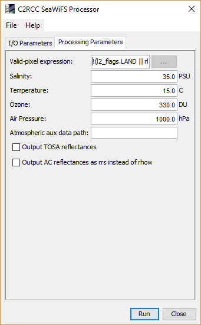

SeaWiFS Processing Parameters

- Valid-pixel expression
The arithmetic expression defines the pixels which are valid for processing. Pixels which are not valid will be marked as no-data in the
target product.
- Salinity
The value used as water salinity for the scene.
- Temperature
The value used as water temperature for the scene.
- Ozone
The value used as ozone if not provided by auxiliary data
- Air Pressure
The surface air pressure at sea level if not provided by auxiliary data
- Output AC reflectances as rrs instead of rhow
Reflectance values in the target product shall be written as remote sensing reflectances and not as water leaving reflectances
- Output TOSA reflectances
Can be enabled to include the TOSA reflectances in the target product.